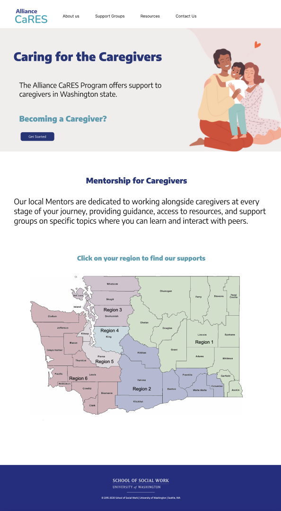
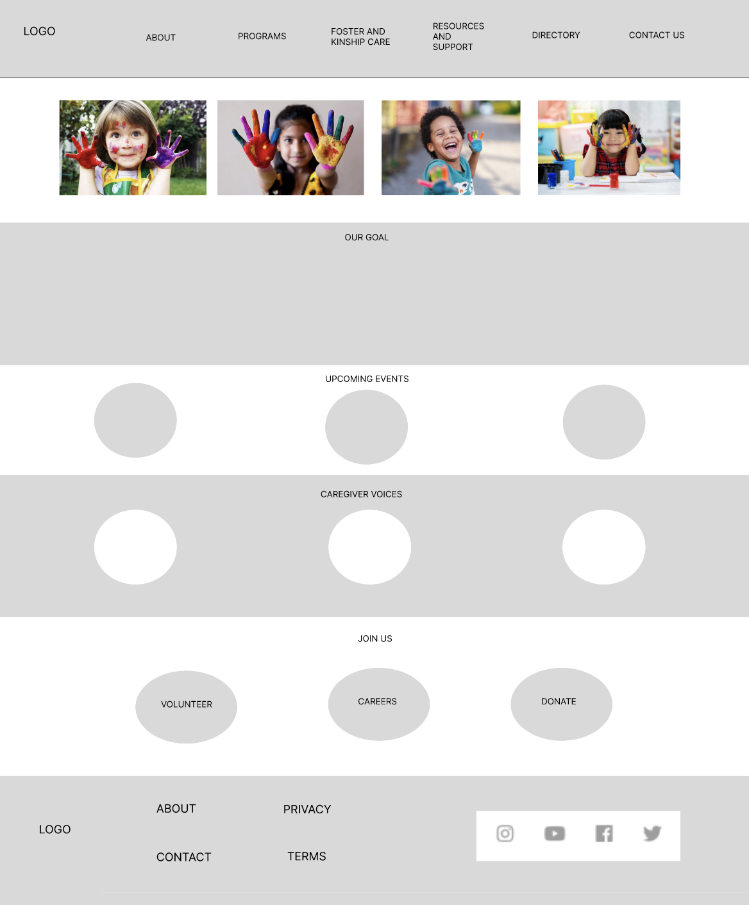
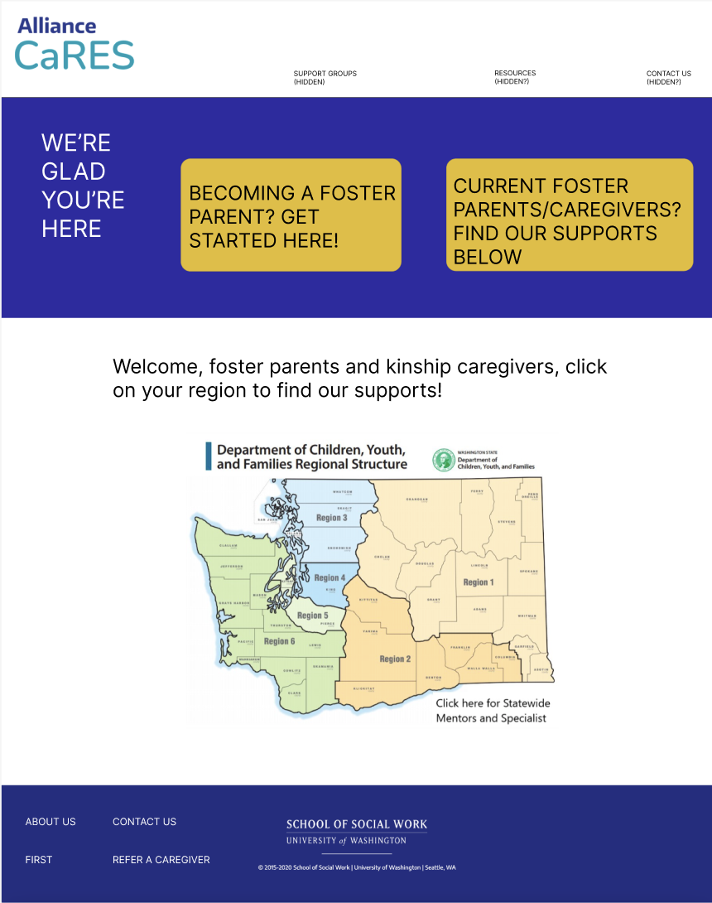
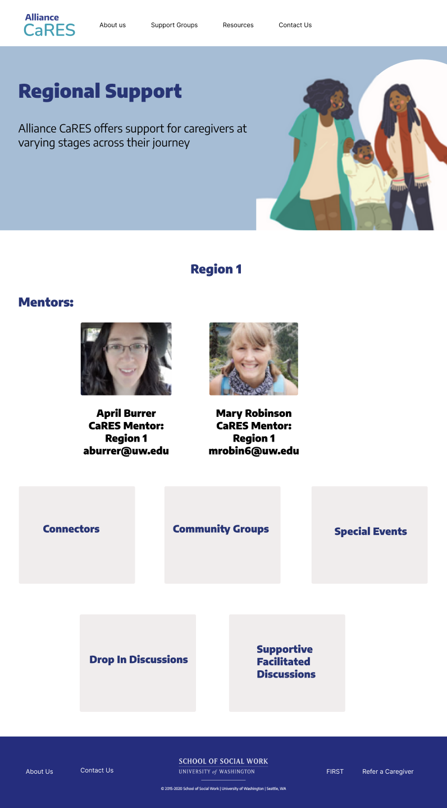
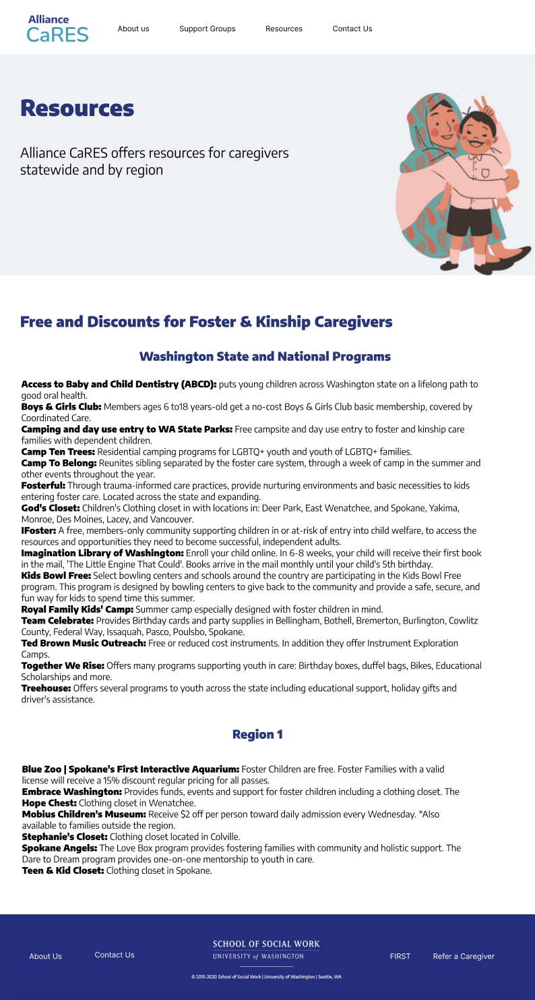

SELECTED WORK · UX/UI DESIGN · WORDPRESS
Alliance CaRES: Caring for the Caregivers.
Designing a welcoming and informative website experience to connect foster and kinship caregivers with meaningful support and resources.
University of Washington · School of Social Work

Refined Alliance CaRES homepage design.
01 / PROJECT OVERVIEW
Designing with purpose.
Alliance CaRES is a caregiver support program associated with the University of Washington School of Social Work.
The project focused on creating a website that raises awareness about foster care while helping foster and kinship caregivers discover information, mentorship opportunities, and regional support resources.
I contributed to the full website design and development process, from early research and information architecture through wireframing, visual design, WordPress development, and stakeholder feedback.
My Role
Website Designer & Developer
Organization
UW School of Social Work
Platform
WordPress
Project Status
Design and development completed; not launched during my contract.
02 / THE CHALLENGE
Making support easier to discover.
Foster and kinship caregivers need access to trustworthy information, community connections, and resources relevant to their circumstances and location.
The challenge was to create a welcoming, easy-to-navigate experience that could support multiple audiences without overwhelming visitors with information.
Information Clarity
Organize resources and program information into understandable sections.
Audience Needs
Support caregivers, youth, community advocates, and professionals.
Regional Discovery
Help visitors find caregiver support and mentorship opportunities by region.
Visual Engagement
Create a welcoming visual experience with consistent design patterns.
03 / DISCOVERY & RESEARCH
Understanding the people behind the experience.
I reviewed comparable university and foster care websites, explored existing content, and gathered stakeholder input to understand project goals and informational priorities.
These activities informed the website's navigation, content organization, and early design direction.
Primary Audiences
- Prospective foster and kinship caregivers
- Current foster and kinship caregivers
- Children and youth in foster care
- People interested in learning about foster care
- Community members and advocates
- Social workers and other professionals
04 / INFORMATION ARCHITECTURE
Creating clear pathways to support.
I organized the website around key visitor needs, creating navigation for program information, support groups, caregiver resources, and contact information.
The website also included regional discovery to help caregivers find support relevant to their location in Washington state.
Key Website Sections
- About Us
- Support Groups
- Resources
- Regional Support
- Contact Us
05 / DESIGN EXPLORATION
From structure to visual direction.
I began by exploring the website's information hierarchy, navigation, and content organization through early wireframes.
As the design evolved, I introduced visual elements and clearer calls to action to help caregivers discover information and support.

01 / WIREFRAME
Establishing the foundation.
Exploring navigation, content hierarchy, caregiver stories, and opportunities for engagement.

02 / INITIAL CONCEPT
Exploring visual possibilities.
Introducing color, prominent caregiver pathways, and regional discovery through an interactive map concept.
07 / REFINED VISUAL DESIGN
A more welcoming experience.
As the design evolved, I refined the homepage with a softer color palette, supportive illustrations, clearer typography, and more intentional spacing.
The updated design emphasized caregiver mentorship, program support, and finding resources by region.
Refined homepage with consistent visual language and clearer content hierarchy.
08 / REGIONAL SUPPORT
Connecting caregivers with their communities.
One of the website's central features was its regional support experience.
The regional page organized caregiver mentors and support opportunities into categories including community groups, special events, and discussions.
This structure was intended to make local support easier to discover.

Regional support page featuring mentorship and caregiver community resources.
09 / RESOURCE DISCOVERY
Organizing information that matters.
The resources page brought together programs, services, and opportunities relevant to foster and kinship caregivers.
Information was organized into statewide and regional sections to help visitors identify resources relevant to their needs.

Resources organized by statewide programs and geographic region.
10 / DEVELOPMENT & TESTING
Bringing the designs to life.
I developed the website in WordPress, creating pages, implementing layouts, integrating content and imagery, and adapting the experience for desktop, tablet, and mobile devices.
I shared the website with stakeholders, incorporated feedback, and reviewed navigation, links, content, and responsive layouts to refine the experience.
11 / OUTCOME & REFLECTION
Designing for meaningful connections.
The project resulted in a newly designed and developed website experience dedicated to supporting foster and kinship caregivers.
The work established a clearer structure for program information, regional support, and caregiver resources.
Stakeholders responded positively to the design changes and improvements.
Although the website did not launch before my contract ended, the project provided valuable experience taking a website from discovery and design through development, testing, and stakeholder refinement.
Project Status: Design and development completed. Website not launched during my contract.
THANK YOU FOR READING